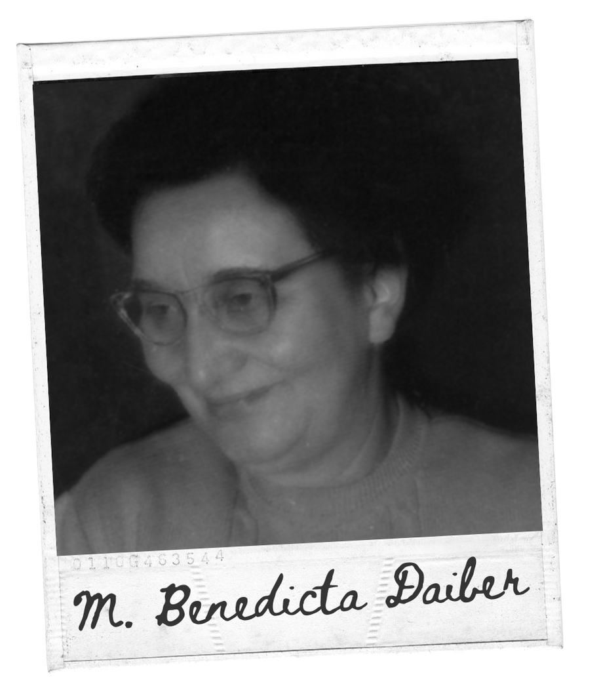

Maria Benedicta Daiber
El cielo es la última palabra de amor de Dios a los hombres y allí espero cantar un día yo también eternamente las misericordias del Señor
Conoce mas de Maria Benedicta DaiberEl cielo es la última palabra de amor de Dios a los hombres y allí espero cantar un día yo también eternamente las misericordias del Señor
Conoce mas de Maria Benedicta DaiberDeseamos que la paz y el amor de Dios inunden sus corazones en esta Navidad.

Nació el 2 de diciembre de 1904 en Stuttgart, Alemania, hija del Dr. Albert Daiber y Hildegard Heyne, ambos ateos militantes. En 1913, se mudaron a Chile. Su primer contacto con la fe fue al escuchar las campanas de la iglesia del pueblo donde vivían y al invocar el nombre de María, sin conocerla. A los 15 años, comenzó a conocer la religión católica con la intención de combatirla y empezó a estudiar. Leyó la Biblia y sintió un vacío por la falta de fe. Enfrentó sus dudas frente a un cuadro del Sagrado Corazón de Jesús, donde escuchó una voz que decía: "Y yo te venceré". Durante el Congreso Eucarístico, tuvo una revelación al ver al Santísimo y creyó en Dios. Inicialmente, luchó mucho contra su conversión, pero finalmente la aceptó y se bautizó el 8 de diciembre de 1923. Desde entonces, su vida de fe fue como una luz inextinguible. Dedicó su vida a la Sagrada Escritura, realizando cursillos bíblicos por toda Latinoamérica, España e incluso Portugal. Redactó el Manual de Estudios Bíblicos y fundó, junto con el P. Menor, el Movimiento Pro Ecclesia Sancta. Entregó su vida por los sacerdotes y amó a Dios con todas sus fuerzas. Vivió de fe hasta el día de su muerte.
Quien es verdaderamente santo sino el que dice en todo momento "si" a Dios, es decir, el que hace en todo momento lo que Dios quiere, como Dios lo quiere, cuando Dios lo quiere y por todo el tiempoque Dios lo quiere, como repetía y vivía María Benedicta(S. Juan 8:29)
Mantente al día con las novedades y actividades de la asociación.
Accede a la hoja informativa N° 84 - Diciembre 2025.
Descargar PDFLibros, hojas de novedades, miembros.
Libros sobre Maria Benedicta.
Conociendo a Maria Benedica.
Clausura de la causa de beatificación.
Con tu donación colaboras en la difusión de su vida y testimonio de fe, esperanza y entrega a Dios.
Tu aporte nos ayuda a avanzar en el camino hacia su beatificación y a mantener vivo su ejemplo cristiano, que sigue inspirando a tantas personas.
Gracias por vuestra generosa colaboración espiritual y material, que nos anima a seguir con ilusión. Os pedimos que continuéis orando para que, si es la voluntad de Dios, pronto podamos verla en los altares.
También agradecemos que compartáis los testimonios y gracias obtenidas por su intercesión, tan valiosos para todos y fundamentales en el proceso de beatificación.